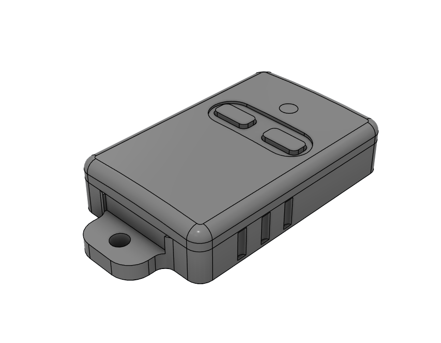

Reverse engineering
Scocca ricostruita attorno a una PCB esistente
Involucro rotto, elettronica ancora funzionante. Ho rilevato la scheda originale e progettato una nuova scocca con pulsanti, foro portachiavi e nervature interne per tenere ferma la PCB.